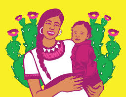

Chávez’s Chicana Liberation recovers the overlooked voices of Chicana activists in Los Angeles, showing how they built a unique “bridging activism” that navigated between the Chicano movement, feminism, and broader social justice struggles.
Introduction

Approach and Methodology
